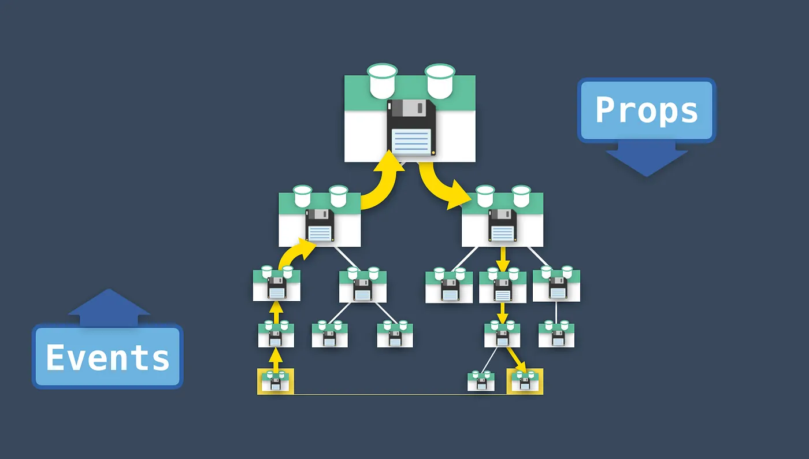
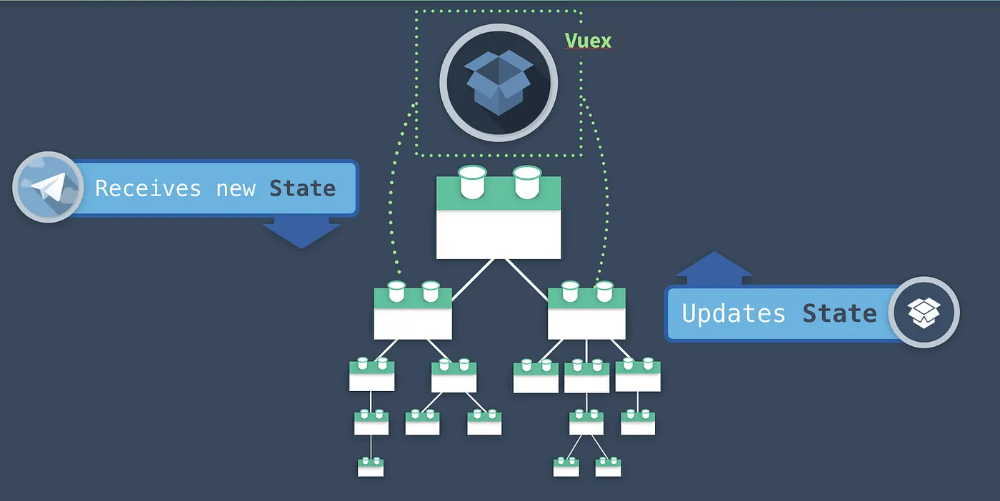
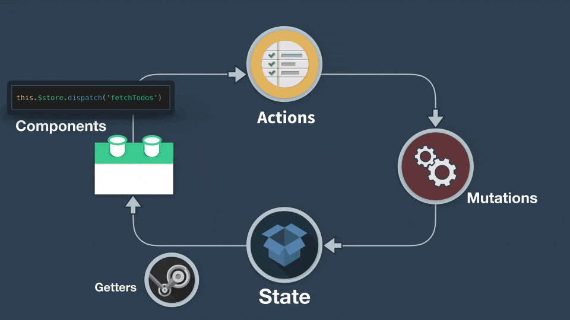

Gestió de l'estat
La gestió de dades entre components en una aplicació Vue.js pot realitzar-se de diferents maneres, depenent de la complexitat de l'aplicació. Duet a això, les dues formes més comunes de passar dades entre components són:
- Passar informació de components pare a fill a través de props i events.
- Utilitzar Vuex per gestionar l'estat global de l'aplicació.
Ambdues tècniques tenen el seu lloc, però s'utilitzen en situacions diferents depenent de l'escala de l'aplicació i la necessitat de compartir dades. Anem a veure les principals diferències entre elles.
1. Passar informació de pares a fills amb props i events
Descripció:
Aquesta és la forma més senzilla i comuna de gestionar dades en Vue.js. Les dades es passen de pare a fill mitjançant les props (per passar dades del component pare al fill) i events (per passar dades del fill al pare). Això és adequat quan els components estan directament relacionats entre si i no cal compartir les mateixes dades a través de molts nivells de la jerarquia de components.
Quan utilitzar-ho:
- Quan tens una jerarquia d'elements (un pare i un fill) i vols passar dades entre ells.
- Quan no tens una aplicació amb molts components que necessiten accedir a les mateixes dades.

Complica aplicacions grans
Aquesta tècnica és la recomanada per VUE però es complica a messura que afegim components a la nostra aplicació.
Com funciona:
- De pare a fill (amb props):
El component pare passa dades al fill a través de les
props. El fill rep aquestes dades com a propietats i les utilitza.
Exemple:
- De fill a pare (amb events): El component fill pot enviar dades al component pare mitjançant l'emissió d'un event. El pare escolta aquest event i pot actuar en conseqüència.
Exemple:
Avantatges:
- Senzillesa: És una tècnica molt senzilla i eficient per a relacions directes entre components.
- Claritat: És fàcil de seguir quan tens només un pare i un fill, i no requereixes gestionar un estat global.
Desavantatges:
- Limitat a jerarquies petites: Si tens una jerarquia més profunda amb molts components que necessiten accedir a les mateixes dades, passar les dades a través de props pot resultar tediós i difícil de mantenir (coneixem-ho com a "prop drilling").
- Difícil de gestionar per a aplicacions grans: Quan les dades es passen a través de molts components intermedis, pot ser difícil mantenir el flux de dades i entendre d'on provenen les dades originals.
2. Utilitzar Vuex per gestionar l'estat global
Descripció:
Vuex és una solució oficial per gestionar l'estat global d'una aplicació Vue.js. Permet que totes les dades importants de l'aplicació siguin accessibles des de qualsevol component, sense la necessitat de passar-les explícitament entre ells mitjançant props o events. Vuex fa servir un model centralitzat per gestionar l'estat de l'aplicació de manera més previsible i controlada.

Quan utilitzar-ho:
- Quan tens una aplicació gran o complexa amb molts components que necessiten compartir les mateixes dades.
- Quan el flux de dades entre els components és complicat i s'ha de controlar de manera centralitzada.
- Quan tens un estat global que ha de ser modificat per múltiples components o accions asíncrones (com crides a APIs).
Com funciona:
- State (Estat): Conté les dades globals de l'aplicació.
- Mutations (Mutacions): Són funcions síncrones per modificar l'estat.
- Actions (Accions): Permeten manipular l'estat de manera asíncrona (per exemple, fer crides a l'API) i després cridar les mutacions per actualitzar l'estat.
- Getters: Permeten llegir i manipular l'estat abans de mostrar-lo als components.
- Modules: Permet organitzar l'estat de manera modular si l'aplicació creix molt.

Avantatges:
- Estat global: Tots els components poden accedir a l'estat de manera fàcil i centralitzada.
- Escalabilitat: Ideal per a aplicacions grans amb molts components que necessiten compartir dades.
- Manteniment: Facilita el manteniment del codi, ja que la gestió de l'estat es fa en un lloc centralitzat i controlat.
- Lògica asíncrona: Vuex permet gestionar lògica asíncrona (com crides a APIs) de manera controlada a través d'accions.
Desavantatges:
- Sovint més complex: Si només tens una petita aplicació amb uns quants components, Vuex pot ser excessiu.
- Requereix configuració inicial: Necessites configurar un store, accions i mutacions, el que pot ser més complicat per a aplicacions petites.
Principals diferències
| Característica | Passar dades amb props i events | Utilitzar Vuex |
|---|---|---|
| Simplicitat | Més senzill i directe per a relacions pare-fill. | Més complexa, però més potent per a aplicacions grans. |
| Estat global | Només dades locals entre components pare i fill. | Gestió d'estat centralitzada per a tota l'aplicació. |
| Escalabilitat | Pot ser difícil d'escalar en aplicacions grans (prop drilling). | Ideal per a aplicacions grans amb molts components. |
| Flux de dades | Directe (pares a fills i viceversa). | Flux més flexible i organitzat, amb control centralitzat. |
| Lògica asíncrona | No gestionat directament. | Les accions permeten gestionar lògica asíncrona. |
| Modularitat | No existeix la possibilitat de modularitzar directament. | Permet dividir l'estat en mòduls per a millor organització. |
Quan utilitzar props i events vs. Vuex:
- Usa props i events si tens una aplicació petita o si només necessites passar dades entre components directament relacionats.
- Usa Vuex si tens una aplicació gran, amb molts components que han de compartir dades o si necessites gestionar un estat global que ha de ser modificat i llegit de manera controlada.